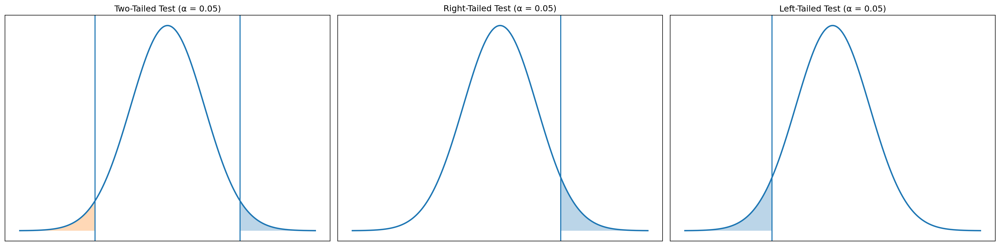
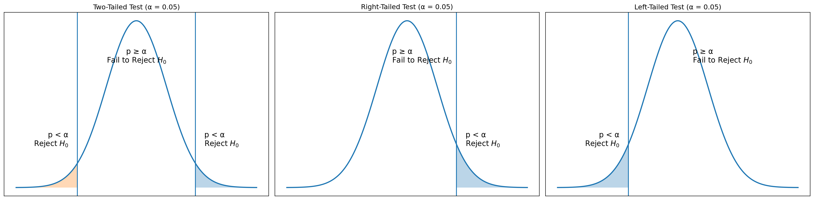
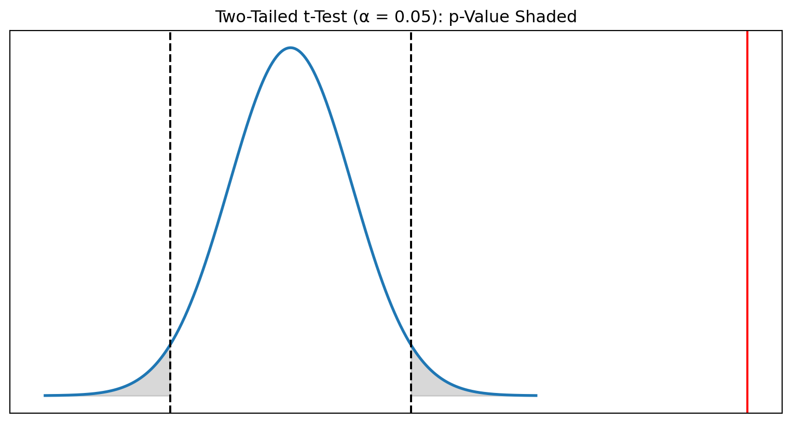
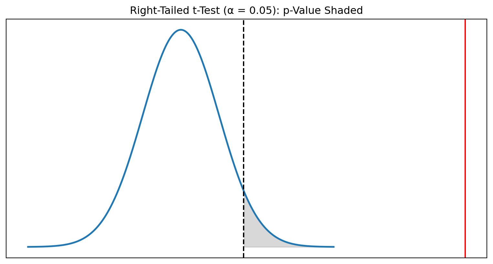
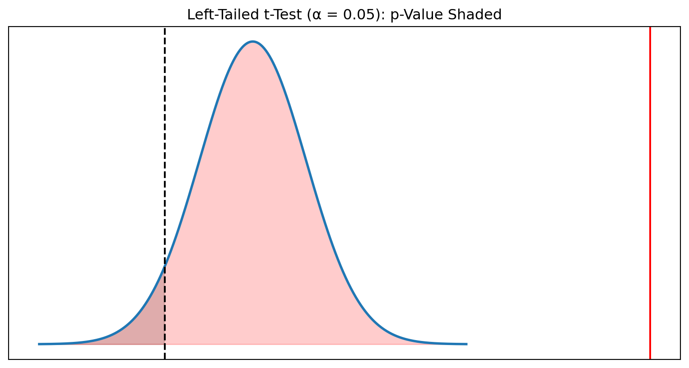
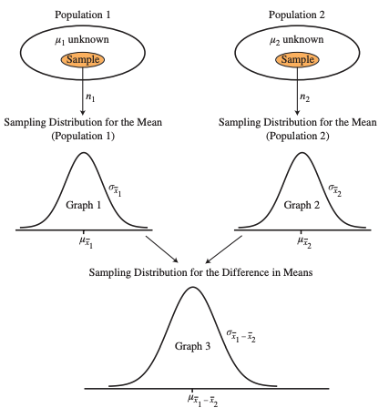
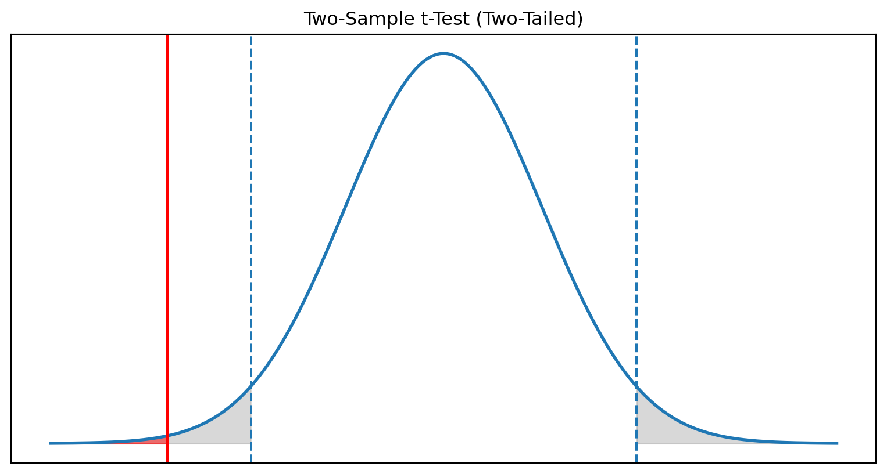
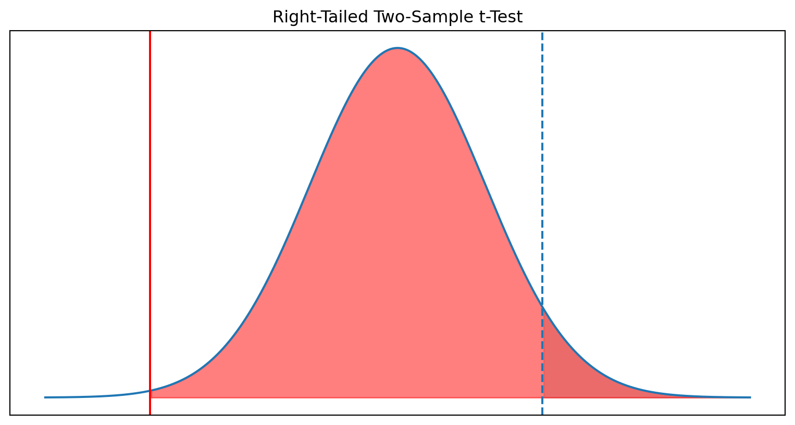
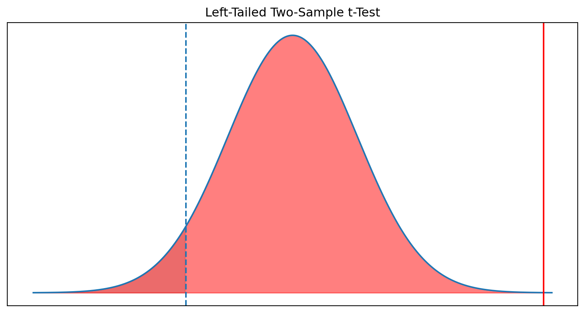

Hypothesis Testing
Statistical Thinking
Karen Hovhannisyan
2026-02-05
Hypothesis Testing | Intuition
We Data Analyists/Statisticians like to make an assumptions about the value of a population parameter, and then:
- collect a sample from that population,
- measure the sample,
- declare in ascholarly manner, whether the sample supports the original assumption.
Stating the Hypothesis
A recent Wall Street Journal article titled “Does the Internet Make You Smarter or Dumber?” posed the possibility that online activities turn us into shallow thinkers.
The article cited a statistic claiming that the average time an American spends looking at a Web page is 56 seconds.
A researcher at a local university would like to test this claim using a hypothesis test.
Null Hypothesis
The null hypothesis \(H_0\), represents the status quo and involves stating the belief that the population parameter is \(\le,=, \ge\) a specific value.
The null hypothesis is believed to be true unless there is overwhelming evidence to the contrary.
Alternative hypothesis
The alternative hypothesis, \(H_1\), represents the opposite of the null hypothesis and is believed to be true if the null hypothesis is found to be false.
The alternative hypothesis always states that the population parameter is \(\gt,\ne, \lt\) a specific value.
You need to be careful how you state the null and alternative hypotheses.
Analyogy with the Legal System | 1
We can either reject it or not reject it (fail to reject it)
The court system assumes a person is innocent until proven guily, the hypothesis test is formulated as follows:
- \(H_0:\) the defendant is innocent (status quo)
- \(H_1:\) the defendant is guilty
Analyogy with the Legal System | 2
The court system might have two conclusions:
- Reject the Null Hypothesis \(\rightarrow\) the defendant is guilty
- Fail to reject the Null Hypothesis \(\rightarrow\) the defendant is guilty
Steps In Hypothesis Testing
- Identify the null and alternative hypotheses
- Set a value for the significance level \(\alpha\)
- Determine the appropriate critical value
- Calculate the appropriate test statistic
- Compare the test statistics with the critical score
- State your conclusion
Hypothesis Stamenet
In this example the Internet users spend an average timeof 56 seconds on a Web page.
Status Quo
\[ H_0: \mu = 56 \text{ seconds (status quo)} \]
Alternative:
\[ H_1: \mu \ne 56 \text{ seconds} \]
All the Combinations
| Two-Tailed Test | Left-Tailed Test | Right-Tailed Test | |
|---|---|---|---|
| Null | \[H_0: \mu = 56\] | \[H_0: \mu \ge 56\] | \[H_0: \mu \le 56\] |
| Alternative | \[H_1: \mu \ne 56\] | \[H_1: \mu < 56\] | \[H_1: \mu > 56\] |
Set Significance Level
The level of significance represents the probability of making a Type I error. A Type I error occurs when we reject the null hypothesis but it is actually true.
The common Value: \(\alpha = 0.05\)
In the scope the above example
Type I Errorwe conclude that the true average time spent on a webpage is not 56 seconds, even though in reality it is 56 seconds.
In Our Hypothesis Context
- The researcher conducts a sample study.
- The sample mean differs enough from
56seconds to fall outside the acceptance region. - The test rejects the null hypothesis at the
5%level. - But in truth, Americans do spend exactly
56seconds on average.
| Alpha (α) | Tail | Critical z-Score | Critical t-Score (df = 20) |
|---|---|---|---|
| 0.01 | One | 2.33 | 2.528 |
| 0.01 | Two | 2.575 | 2.845 |
| 0.02 | One | 2.05 | 2.312 |
| 0.02 | Two | 2.33 | 2.528 |
| 0.05 | One | 1.645 | 1.725 |
| 0.05 | Two | 1.96 | 2.086 |
| 0.10 | One | 1.28 | 1.325 |
| 0.10 | Two | 1.645 | 1.725 |
Type I vs Type II

Determining Critical Values | z-test
When Variance is known
- test statistic would be \(z_{\bar{x}}\)
- critical value would be \(z_{\alpha}\)
\[ z_{\bar{x}} = \frac{\bar{x} - \mu_{H_0}}{\sigma / \sqrt{n}} \]
- Claimed mean: \(\mu_{H_0} = 56\) seconds
- Sample mean: \(\bar{x} = 62\) seconds
- Population standard deviation (historical estimate): \(\sigma = 18\) seconds
- Sample size: \(n = 45\)
\[ z_{\bar{x}} = \frac{\bar{x} - \mu_{H_0}}{\sigma / \sqrt{n}} = \frac{62 - 56}{18 / \sqrt{45}} = \frac{6}{2.683} = 2.24 \]
Interpretation | z-test
A test statistic of 2.24 lies well into the rejection region (far from 0).
- For a two-tailed test at \(\alpha = 0.05\), the critical values are \(\pm 1.96\).
- Since 2.24 > 1.96, we reject \(H_0\).
Interpretation:
There is statistically significant evidence that the true average time spent on a webpage is different from 56 seconds.
Graphical Representation
Z Value
| Test Type | Hypotheses | Condition | Conclusion |
|---|---|---|---|
| Two-tail | \(H_0: \mu = \mu_0\) | \(\lvert z_x \rvert > z_{\alpha/2}\) | Reject \(H_0\) |
| \(H_1: \mu \ne \mu_0\) | \(\lvert z_x \rvert \le z_{\alpha/2}\) | Do not reject \(H_0\) | |
| One-tail | \(H_0: \mu \le \mu_0\) | \(z_x > z_\alpha\) | Reject \(H_0\) |
| \(H_1: \mu > \mu_0\) | \(z_x \le z_\alpha\) | Do not reject \(H_0\) | |
| One-tail | \(H_0: \mu \ge \mu_0\) | \(z_x < -z_\alpha\) | Reject \(H_0\) |
| \(H_1: \mu < \mu_0\) | \(z_x \ge -z_\alpha\) | Do not reject \(H_0\) |
P Value
It is more convenient to use p-value apporach, as it helps us to rememeber the decission rule easily.
If the p-value is less than \(\alpha\), there is little chance of observing the sample mean from the population on which it is based if the null hypothesis were actually true. We therefore reject the null hypothesis under this condition.
| Condition | Conclusion |
|---|---|
| \(p\text{-value} \ge \alpha\) | Do not reject \(H_0\) |
| \(p\text{-value} < \alpha\) | Reject \(H_0\) |
Visual Representation

Type II Error
Type II error, which occurs when the null hypothesis is really false and we fail to reject it. The probability of a Type II error is known as \(\beta\).
Case Study
Average Speed in Yerevan
Urban mobility reports often claim that the average weekday driving speed in Yerevan is 15 km/h. A transportation analyst wants to test this claim using recent GPS data from ride-sharing vehicles.
This example is ideal for explaining all three hypothesis-test formulations:
- Two-Tailed: Is the true average speed different from 15 km/h?
- Right-Tailed: Are drivers going faster than 15 km/h?
- Left-Tailed: Are drivers going slower than 15 km/h?
Two Tailed Hypotheses
Since the population standard deviation is unknown, a one-sample t-test is appropriate to use.
- \(H_0: \mu = 15\)
- \(H_1: \mu \ne 15\)
What do we have ?
- Sample size: \(n = 1000\)
- Sample mean: \(\bar{x} = 16.2 \text{ km/h}\)
- Sample standard deviation: \(s = 5.1 \text{ km/h}\)
- Null hypothesis mean: \(\mu_{H_0} = 15\)
- Significance level: \(\alpha = 0.05\)
- Degrees of freedom: \(df = 999\)
The test statistic is:
\[ t_{\bar{x}} = \frac{\bar{x} - \mu_{H_0}}{s/\sqrt{n}} \]
Visual Representation

Interpretation of the Two-Tailed Tests
- The computed test statistic is: \(t_{\bar{x}} = 7.44\)
- For a two-tailed test with \(\alpha = 0.05\) and \(df = 999\) \(\rightarrow\) \(t_{\alpha/2, df} = \pm 1.96\) :
- p-value: \(p = 2 \cdot P(T > 7.44)\approx 1 \times 10^{-10}\)
\[\downarrow\]
\(|7.44| > 1.96 \rightarrow\) \(p < 0.05\)
We reject the null hypothesis. There is very strong evidence that the true average weekday driving speed in Yerevan is not equal to 15 km/h.
Right Tailed Test
We want to test whether the true average weekday driving speed in Yerevan is greater than
the stated value of 15 km/h.
\[H_0: \mu \le 15\]
\[H_1: \mu > 15\]
What do we have?
- Sample size: \(n = 1000\)
- Sample mean: \(\bar{x} = 16.2\) km/h
- Sample standard deviation: \(s = 5.1\) km/h
- Null hypothesis mean: \(\mu_{H_0}=15\)
- Significance level: \(\alpha=0.05\)
- Degrees of freedom: \(df = 999\)
Visual Representation

Interpretation
- Test statistic: \(t_{\bar{x}} = 7.44\)
- Critical value: \(t_{\alpha, 999} = 1.645\)
- p-value: \(p \approx 5\times 10^{-11}\)
\[\downarrow\]
Since \(7.44 > 1.645\) and \(p < 0.05\), we reject \(H_0\).
Conclusion: There is extremely strong evidence that drivers in Yerevan drive faster than 15 km/h on average.
Left-Tailed Test
We want to test whether the true average weekday driving speed in Yerevan is less than
the stated value of 15 km/h.
\[H_0: \mu \ge 15\]
\[H_1: \mu < 15\]
What do we have?
- Sample size: \(n = 1000\)
- Sample mean: \(\bar{x} = 16.2\) km/h
- Sample standard deviation: \(s = 5.1\) km/h
- Null hypothesis mean: \(\mu_{H_0} = 15\)
- Significance level: \(\alpha = 0.05\)
- Degrees of freedom: \(df = 999\)
Visual Representation

Interpretation
- Test statistic: \(t_{\bar{x}} = 7.44\)
- Critical value: \(t_{\alpha, 999} = -1.645\)
- p-value: \(p = P(T < 7.44) \approx 1.00\)
\[\downarrow\]
Since \(7.44\) is not less than \(-1.645\) and \(p > 0.05\), we do NOT reject \(H_0\).
Conclusion: There is no evidence that drivers in Yerevan are slower than 15 km/h. In fact, the sample strongly indicates the opposite.
Two Sample t-Test (A/B test)
.
Case Study
A telecom company is testing two versions of its mobile self-care app:
- Version A (control) — current user interface
- Version B (treatment) — redesigned dashboard
The team wants to know whether average daily user engagement (minutes/day) differs between the two versions.
Does Variant B change average daily engagement?
Hypothesis
Since population SD is unknown for both groups, we use a two-sample Welch t-test.
\[H_0: \mu_A = \mu_B\]
\[H_1: \mu_A \ne \mu_B\]
Results
- Version A: \(n_A = 800\), \(\bar{x}_A = 12.5\), \(s_A = 6.2\)
- Version B: \(n_B = 850\), \(\bar{x}_B = 13.4\), \(s_B = 6.8\)
Visual Representation

Interpretation
- Test statistic: \(t = -2.93\)
- Critical values: \(t_{\alpha/2, df} \approx \pm 1.96\)
- p-value: \(p = 0.0034\)
\[\downarrow\]
Because \(|t| > 1.96\) and \(p < 0.05\), we reject \(H_0\).
Version B produces a statistically significant difference in average daily engagement compared to Version A.
Right-Tailed Test
Does Variant B increase engagement?
Now the team wants a directional test:
Does Version B strictly increase user engagement?
Visual Representation

Interpretation
- Test statistic: \(t = -2.93\)
- Critical value: \(t_{0.95, df} = 1.645\)
- p-value: \(p = 0.998\)
\[\downarrow\]
We fail to reject \(H_0\).
There is no evidence that Version B increases user engagement.
Left Tail Test
Does Variant B reduce app load time?
Load time is a negative metric: smaller = better.
\[H_0: \mu_B \ge \mu_A\]
\[H_1: \mu_B < \mu_A\]
- Version A: \(\bar{x}_A = 3.2\) sec, \(s_A = 1.4\), \(n_A = 600\)
- Version B: \(\bar{x}_B = 2.9\) sec, \(s_B = 1.3\), \(n_B = 620\)
Visual Representation

Interpretation
- Test statistic: \(t = -4.37\)
- Critical value: \(t_{0.05, df} = -1.645\)
- p-value: \(p \approx 0.0000\)
\[\downarrow\]
We reject \(H_0\).
There is strong evidence that Version B reduces app load time.
Summary
| Test Type | Scenario | Hypotheses | Test Statistic | Critical Value(s) | p-Value | Decision | Interpretation |
|---|---|---|---|---|---|---|---|
| Two-Tailed | Difference between App A and App B | \(H_0:\mu_A=\mu_B\) \(H_1:\mu_A\ne\mu_B\) |
\(t=-2.93\) | \(\pm 1.96\) | \(p=0.003\) | Reject | Engagement is significantly different between A and B. |
| Right-Tailed | Does B increase engagement vs A? | \(H_0:\mu_B\le\mu_A\) \(H_1:\mu_B>\mu_A\) |
\(t=-2.93\) | \(t_{0.95}=1.645\) | \(p=0.99\) | Fail to reject | No evidence that Version B increases engagement. |
| Left-Tailed | Does B reduce app load time vs A? | \(H_0:\mu_B\ge\mu_A\) \(H_1:\mu_B<\mu_A\) |
\(t=-4.37\) | \(t_{0.05}=-1.645\) | \(p\approx 0.0000\) | Reject | Version B significantly reduces app load time. |